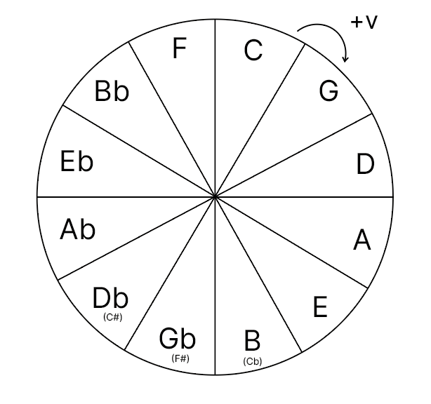

Wall of Notes?
This could be a place where I make notes about music things. Not sure yet. We’ll see.
12/23/23 Cycling through Major 7ths
The basic task is to play Major 7th chords through the circle of fifths.
Circle of fifths
Going clockwise the next note is a perfect fifth from the previous note.

Major 7th chords have a I-III-V-maj7 structure. These are the first, third, fifth, and major 7th notes in the major scale of the root key. For example, the key of C has 7 notes in the major scale: C D E F G A B
The chord C Maj7 (also notated as C∆7) is C-E-G-B.
Where C is the root or first note, E is the III, G is the V, and B is the major VII. The same pattern is applied to make Maj7 chords in all other keys.
At the beginning of this practice track I play chords going anti-clockwise through the circle of fifths:
C∆7 - F∆7 - Bb∆7 - Eb∆7 - Ab∆7 - Db∆7 - Gb∆7 - B∆7 - E∆7 - A∆7 - D∆7 - G∆7 - C∆7
I can probably play through this a bit faster, but not without making mistakes. One goal is to get the speed up both in both directions (anti-clockwise and clockwise).
Next, there is a short riff that I got from Nahre Sol’s youtube channel, who has some other great recommendations for playing through maj7th chords.
Then, I end with playing ∆7th chords in my left hand and messing around with playing through major scales in the right hand. For example, if I’m playing a C∆7th, then I’m playing through the C major scale and so on. I thought I would have a better grasp on all of the major scales, but some of them are way out of practice. Yeesh. Baby steps.
A random observation about musical relationships that this exercise drew out. When playing anti-clockwise, the next chord remains ambiguous with respect to the tonal center: it could indicate a switch of the root, but maybe not. There isn’t enough evidence to go on based on the notes in the major 7th chords.
For example, going from C∆7 to F∆7 involves CEGB and FACE, all of these notes are in the C Major scale. So, the F∆7 chord doesn’t add any new notes, which in my mind allows some ambiguity about whether we are in C major still or have switched to F major. The F major scale has a Bb, which is the one note that makes F major different from C major, but this note is not voiced in the F∆7 chord. However, this “new note”, which would provide evidence that the root had switched from C to F is voiced by the next chord in the circle of fifths, Bb. So, in some sense moving anti-clockwise by one chord sets up a question—has the root changed?—and moving one more chord answers the question—yes—, but also asks the same question again, in a circle of fifths.
12/23/23 Practice
Back into practicing the piano and working on my chops. It’s been a little bit painful because I am so out of practice. Perhaps there is a new year’s resolution here to practice more. But, what to practice?
My recent routine is working through the circle of fifths and reclaiming some basics.
- Playing Maj7 chords anti-clockwise and then clockwise through the circle of fifths
- Playing II-V-I through the circle of fifths
- Playing V7-V7 through the circle of fifths
- Playing I-VI-II-V through the circle of fifths. This is the same progression as in “Heart and Soul”, a duet we’d play as kids. Currently, I’m asking the question whether I can play this song effortlessly (chords in the left hand, melody in the right) in a key as I go around the circle, and if the answer is yes, I shouldn’t practice this key, and if the answer is no, then I should.
Starting to get some fluency back. I was never that diligent at practicing through all of the keys, and some of them need a lot of work.
Ideally, I’d like to keep a little journal here of practice strategies, reporting on: what I’m doing, what I’m hoping to get out of it (or did get out of it), and other observations that could relate to musical connections and/or connections to the cognitive science of skill learning.
General set-up issues
so many
Can’t get a really good sync with Ableton. Don’t bother with any live processing from Ableton, unless it is playback only. Fiddle with the error compensation until the lag is gone.
256 bits
28 ms error compensation
Still getting some audio dropout sometimes, not sure why.
Dolphin Dance
Have been messing about with Herbie Hancock’s “Dolphin Dance” on the piano for a while.
Had a clear day to try some mixer mimicking. Plan was to develop my own voicings for everything, but mix them similar to the Maiden Voyage recording…and then jam it.
What happened:
- Recorded the Hancock version into Ableton
- Located BPM
- Voices
- Rhodes
- Moog matriarch bass lines
- MPC drums
- OB-6 horns
- For each voice, play with the original record. Keep recording in a loop using Ableton comping lanes
- Fix messes by sampling in comping lanes/ explore have fun with fixing the mess
- Duplicate the head, then solo overtop for a bit
- Mix it down.
- Try some final mixing touches.